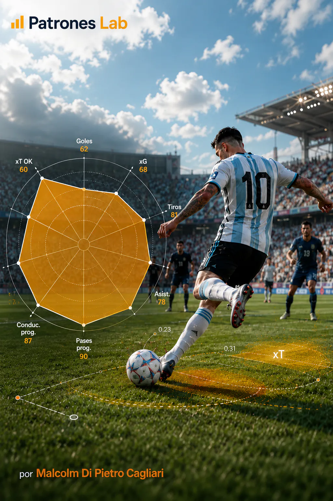

Expected Goals in Football
Logistic regression model that estimates the probability of each shot becoming a goal using public StatsBomb data, match-level validation and application to the Qatar 2022 World Cup.
Logistic regression model that estimates the probability of each shot becoming a goal using public StatsBomb data, match-level validation and application to the Qatar 2022 World Cup.

Probabilistic Expected Threat model in football using public StatsBomb data. It estimates the probability of a goal in the next 5 actions.

Analysis of 2022 World Cup statistics using public StatsBomb data, focused on summarizing individual performances and comparing players through percentile radar charts.

Simulation of one million 2026 World Cup scenarios using Elo ratings to estimate the probability of reaching the semifinals, playing the final and becoming champion.

Simulation of one million LaLiga 2026/27 scenarios using Elo ratings to estimate the probabilities of the championship’s most important outcomes.

A goal model using the Poisson distribution to calculate each team’s attacking and defensive strength, combined with Monte Carlo simulation to estimate championship probabilities.

Simulation of one million Nations League 2026/27 scenarios using Elo ratings and a Poisson-based goal model to estimate the probabilities of winning the group, progressing through the knockout rounds and becoming champion.

A binomial model for exploring goal and match-outcome probabilities using shots and conversion rates from 36 clubs in the 2026/27 Champions League.